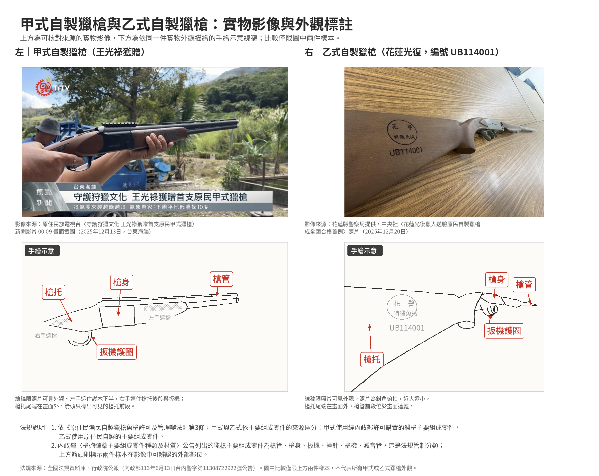

甲式與乙式：兩件樣本的外觀部位
手繪示意線稿依各自的實物影像描繪，只畫照片看得到的外觀。點選部位或下方按鈕查看說明；拉「分離」可把部位拆開檢視，拉「原照」可把線稿疊回照片核對位置。
甲式王光祿獲贈的甲式自製獵槍
影像來源：原住民族電視台〈守護狩獵文化 王光祿獲贈首支原民甲式獵槍〉新聞影片 00:09 截圖（2025年12月13日，台東海端）。左手遮住護木下半，右手遮住扳機與槍托後段，槍托尾端在畫面外。
乙式花蓮光復的乙式自製獵槍（UB114001）
影像來源：花蓮縣警察局提供，中央社〈花蓮光復獵人送驗原民自製獵槍 成全國合格首例〉（2025年12月20日）。斜角俯拍，近大遠小；槍托尾端在畫面外。
分離動畫只是示意：只把照片看得到的外觀部位拉開，方便辨識，不代表實際拆解方式，也不包含內部零件。比較僅限這兩件樣本。
法規：依《原住民漁民自製獵槍魚槍許可及管理辦法》第3條，甲式使用經內政部許可購置的獵槍主要組成零件，乙式使用原住民自製的主要組成零件。內政部公告的獵槍主要組成零件為槍管、槍身、扳機、撞針、槍機、減音管。
來源：全國法規資料庫、內政部113年6月13日公告、原視新聞、中央社、自由時報。
靜態版對照圖
